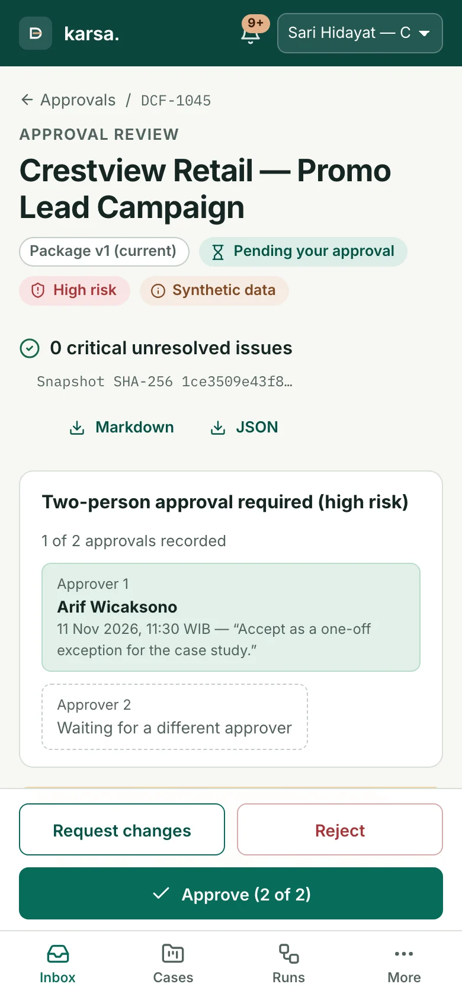

Evidence, not guesses
Each value points to the sentence it came from. No source? It is marked missing, not guessed.
AI-assisted decision workspace
Turn business requests into clear requirements, informed decisions, and controlled action.
Portfolio prototype · synthetic data
01 · The problem
Briefs come as emails, PDFs and chat messages. Targets are clear, but the details that decide a deal are missing or contradict each other. An AI can read faster — it can also guess.
Karsa reads the brief, marks every gap, and never fills one with a guess.
Target: 3,000 qualified leads
Budget: Rp150,000,000 for the full campaign
Timeline: 2 months from kickoff
Geography: to be determined
We have not yet agreed what counts as a qualified lead.
Finance note: the vendor cap is Rp120 juta.
02 · How it works
Each value points to the sentence it came from. No source? It is marked missing, not guessed.
Cost and margin come from the rate card, not from the AI.
3,000 × Rp35,000+ Rp12,000,000= Rp117,000,000margin 22%
Approval locks to one hashed version. High-risk deals need two different people.
If an outcome is unclear, retry stays off until someone checks the target system.
Scored on 36 cases it never saw: 1 passed. The release gate blocks it.
03 · Principles
Values carry their quote and position. Answers from clients need a reference you can check.
Two separate acts, recorded separately. Nothing reaches the CRM or tracker on approval alone.
Incidents, manual resolution and cancellation with a compensation list. Nothing is deleted quietly.
Held-out evaluation, sample sizes, and a causation caveat on every impact chart.
04 · What is proven
Not yet: a live Claude evaluation, SSO, real CRM connectors, OCR, a hosted demo, or real users.
Prototype on synthetic data · no client or business result is claimed
05 · Built to be used
Analysts work in a dense desktop workspace; approvers get a calm mobile review with the numbers, the changes and the evidence one tap away.
